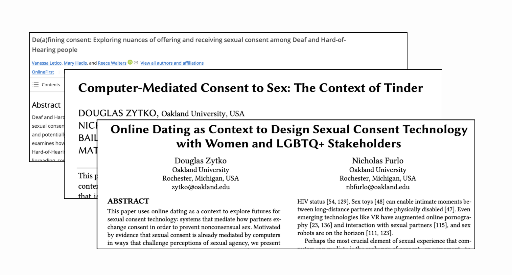
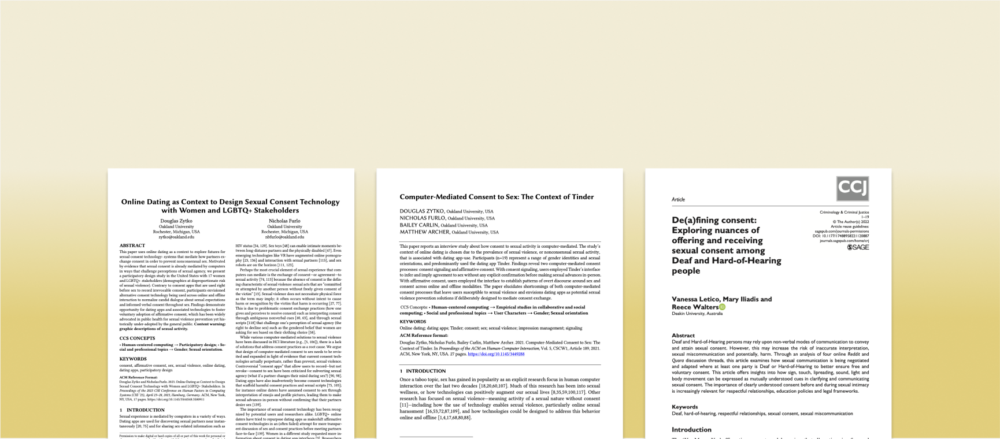
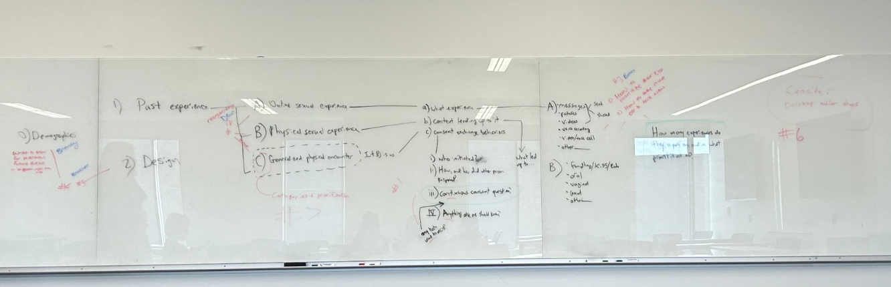

To kick off the project, I immersed myself in over 10 literature reviews, diving deep into the structure of research papers,
identifying knowledges gaps within the related field and exploring an UX methodological toolbox to identify the most effective
approach for our study.
In the research, particiaptory design is used to navigate how consent can be communicated in both online and in-person dating
environments among populations with visual and aural disabilities to understand needed accomodations, comfort and safety.

NSF REU : The University of Michigan-Flint
How is computer-mediated consent in online to-person dating environments exchanged among aurally and visually disabled populations?

Role
UX Researcher
Duration
May - Aug 2024
Team
3 UX Researchers
1 Mentor
Project Overview
Last summer, I spent 10 weeks at the University of Michigan-Flint conducting UX research. Collaborating with 3 researchers and a mentor, I immersed myself in literature reviews, developed a comprehensive study plan, conducted a survey, and synthesized the findings by creating key themes. As this was my first experience in academia, it was a steep learning curve, but working hands-on with such a supportive team was incredibly rewarding.
What I Accomplished in 10 Weeks
• Familiarize myself with 10+ related literature reviews
• Applied for IRB approval to conduct our Qualtrics survey with 80+ questions
• Collected 68 out of 200 survey responses through Prolific recruitment
• Implemented reflective thematic analysis to uncover findings and create themes
• Delivered 10 presentations for weekly sprint reviews
• Attended weekly meetings and seminars (e.g. graduate school, mental health)
• Bonded with other researchers and mentors on our field trips :)
Beyond the NSF REU Program
• Successfully recieved all 200 survey responses
• Focusing on one of the three population groups in the data, I am analyzing and developing a theming story
• Process of submitting publication for the CHI Conference
Timeline
Creating the Foundation
Designing the Study Plan
With my team, I created a study plan to recruit at least 20 participants. Initially, we had planned to conduct in-person group interviews to explore how consent is exchanged in these contexts. However, due to resource limitations and accommodation concerns, we decided to transition to a survey approach.
Since I was working with human subjects, I obtained certification in PEERRS (Program for Education and Evaluation in Responsible Research and Scholarship) research ethics and compliance to ensure the study adhered to ethical guidelines and best practices.
The Institutional Review Board (IRB) process, initially estimated to take a week, ended up taking nearly half of the program's duration. Determining the survey structure—including question flow, consent form, and story writing—required constant iterations. Based on IRB feedback and further literature reviews, I revised both the survey structure and content. After several rounds of revisions and multiple rejections from the IRB, I addressed the feedback and resolved inconsistencies, ultimately leading to the approval for our 80+ question survey to be launched.
Through Prolific, we successfully recruited 200 participants, focusing on individuals with aural and/or visual disabilities who had experience with online dating. I designed a survey structure with a flow aimed at understanding their online and in-person interactions, integrating participatory design methods through open-ended questions to spark product innovation.

Analysis Process
To reach 200 participants, we first released the survey to 20 to ensure data alignment with our objectives. After receiving feedback, my team and I revised the survey questions before relaunching it to the remaining participants. We also reviewed additional literature to refine our data analysis methods.
I supported the use of Reflexive Thematic Analysis (RTA) for its flexibility in analyzing diverse quantitative data and its focus on identifying recurring patterns. This was crucial for understanding potential patterns across different disability groups.
As we compiled the data in Miro, I created a codebook to identify consistent patterns and connected themes, leading to a deeper understanding of how aurally and visually disabled populations communicate consent.
Reflections
Pictured above is my mentor Dr. Doug Zytko and co-researchers Brooke Bui, Brooklynn Kelly, & Devin Tebbe.
With no prior professional experience in this field, I walked in on my first day without expectations.
Flint was immediately different from the life I was used to. I had gone from a lively college town to what felt like a quiet,
unfamiliar place.
The first days were rough – no friends, nothing to do, I felt overwhelmed and lonely. I even wanted to leave.
But after connecting with the cohort and as the research progressed, I started to rediscover my sense of purpose.
I joined a project with this amazing team to understand how the aurally and visually impaired navigate consent in
online-to-in-person dating environments.
The iterative process of conducting UX research was both challenging and rewarding, teaching me to trust myself and be
confident in my choices. It also demonstrated that things don't always go as planned. In this case, we faced a few
challenges that slowed us from analyzing all of our responses.
This experience in Flint was full of surprises. Despite its reputation, I discovered a strong, supportive community
within the research and the city itself.